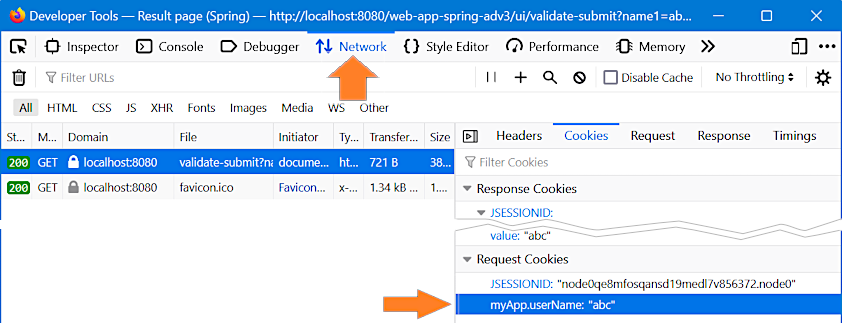
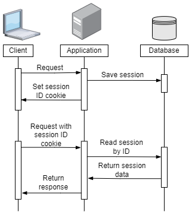
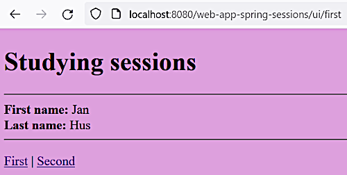
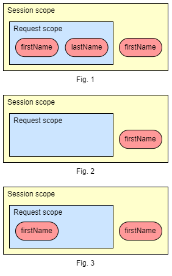
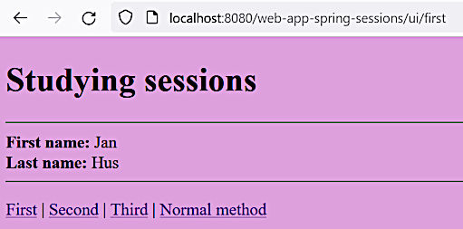

Sessions and cookies
Sessions and cookies
Sessions and cookies
Mar 30, 2023
[2.13]
HTTP is a stateless protocol so it doesn't save information between the requests. Cookies were invented in maybe 1995 to fill this gap.
Also see [16].
This is the first simple implementation that is probably not to be used in production.
Git commit:
24df68c254b3e3173d927e87505a419c41997009first simple cookie usage demonstrated
In the /validate-submit endpoint we create a Cookie and add it to the HttpServletResponse
object that is provided by Spring MVC via the corresponding controller method parameter
response. After the response is received the added cookie may be viewed in the debugger (F12):

The added cookie is sent by the browser with every subsequent request so it can be used on every
page like the one that is returned by the /validate endpoint.
The above method is much inconvenient especially when used in a lot of controllers. The Spring
@CookieValue annotation may help simplify this task (see the EmailController
class):
@RequestMapping("/sendEmail")
public String sendEmail(@CookieValue("myApp.userName") String userName, Model model) {
model.addAttribute("sendEmailDto", new SendEmailDto());
model.addAttribute("userName", userName);
return "send-email-page";
}Git commit:
c24fc1711dc1fcf02609152e8135f838b886fdd6using @CookieValue annotation
Apr 1, 2023
Cookies are stored inside the client's computer and the client may not allow to drop such kind of litter inside their system.
Cooking processing may be costly as they are just text files. Complex structures may be have very large size. Also cookies may have size limitation.

To address these problems there is an alternative called sessions.
A client sends a request. The application doesn't send the whole set of data to the client but instead saves the session state in the database and returns to the client a response with above single session ID.
On a next request the session ID cookie is sent back to the application that retrieves the session state by this session ID and returns to the client the customized response.
In the ValidatedController
class using setting a session attribute:
@RequestMapping("/validate-submit")
public String showCalculatePageSpring(<...>,
HttpSession session) {
. . .
session.setAttribute("userName", dto.getName1());
return "result-page-spring";
}Then this attribute may be used on the JSP page like process-email-page.jsp:
. . .
<h1>Hi ${userName}!</h1>
. . .Or the session attributes may be transformed and set into the model likes it's don in the
EmailController
class:
@RequestMapping("/process-email")
public String processEmail(@ModelAttribute SendEmailDto sendEmailDto,
HttpSession session, Model model) {
model.addAttribute("userName", "dear " + session.getAttribute("userName"));
return "process-email-page";
}Important
On a JSP page, when resolving a placeholder variable, first an attempt is done to find this variable in the model and if not found then it's searched in the session.
As servers have still limited storage capacity and the number of requests and different sessions may be huge, it's not recommended to store unnecessary data in sessions.
Git commit:
8075a5220613199f779944e74dbadb0662189b24session usage demonstrated
Note
The javax.servlet.http.HttpSession is not a part of Spring.
It may be unreasonable or even impossible to hold used session data forever. To limit the storage
period of time (in minutes) the following parameter may be used in the web.xml file:
<session-config>
<session-timeout>20</session-timeout>
</session-config>In the code-based configuration (e.g. in the ValidatedController
class) the javax.servlet.http.HttpSession object may be used for that
(in seconds):
@RequestMapping("/validate-submit")
public String showCalculatePageSpring(@Valid @ModelAttribute("dto") UserInfoValidatedDto dto,
HttpSession session) {
session.setAttribute("userName", dto.getName1());
session.setMaxInactiveInterval(20);
return "result-page-spring";
}It's proved that after 20 seconds of inactivity the session attribute userName is no longer
available. We are now not going to preserve this code in the project.
@SessionAttributes annotationNote
Using the following approach may be pretty tricky and may take much time for investigation of possible errors. See here for more extensive explanation.
Also see here
to find information about combination of this and the @ModelAttribute annotations.
The @org.springframework.web.bind.annotation.SessionAttributes annotation is added to the
ValidatedController
class:
@Controller
@SessionAttributes("userInfoDto")
public class ValidatedController {
@RequestMapping("/validate")
public String showHomePageSpring(Model model) {
model.addAttribute("userInfoDto", new UserInfoValidatedDto());
return "home-page-validated";
}
. . .Note
Multiple model attributes may be specified in the @SessionAttributes annotation.
Also see [2.13, 1:39:39].
In the EmailController
we just remove the explicit session handling code.
In the views:
We just use the specified session attribute like this:
. . .
<h1>Hi ${userInfoDto.name1}!</h1>
. . .Git commit:
c9a8051e03ffaea64b73eb4289e30bc8b7757769@SessionAttributes annotation used
Apr 3, 2023
New simple project created to make the description more clear. The URL is http://localhost:8080/web-app-spring-sessions/ui/first.
Git commit:
cb5ad3e48f0e4437d2489f1c89d0247019116045new project created for sessions investigation
This narration is going to be done for further comparison with the upper level scope.
Request scope defines data that is valid during a single request handling process, e.g. from the request receipt to the response result sending. As the request is processed (like the rendered view is sent to the client) the request scope is destroyed.
Two controller methods are defined:
@Controller
public class FirstController {
@RequestMapping("/first")
public String firstHandler(Model model) {
model.addAttribute("firstName", "Jan");
model.addAttribute("lastName", "Hus");
return "index";
}
@RequestMapping("/second")
public String secondHandler(Model model) {
String firstName = (String) model.getAttribute("firstName");
System.out.println("firstName=" + firstName);
return "index";
}
}The first one sets two model attributes and the second one tries to access it. The Model object
here has the request scope so the instances are different for the two requests and so in the
second method the requested attribute is absent:
firstName=nullThe page is going to look like this:

The first URL is http://localhost:8080/web-app-spring-sessions/ui/first. As for now the second link opens the page where all fields are empty.
Git commit:
d436f2b6408024785fc0db78d60fb17afb87ba32request scope demonstrated
Just add the @SessionAttributes("firstName") annotation to the FirstController controller
()see above) and see what happens:
@Controller
@SessionAttributes("firstName")
public class FirstController {
. . .
When the first handler method is being called the two model attributes still exist in the request
scope but the attribute firstName also gets copied to the session scope (fig. 1).
When the first method is finished the two model attributes are removed from the request scope
but the attribute firstName remains in the session scope (fig. 2).
When the second handler method is called the session scope attributes get copied to the request scope (fig. 3).
So unlike the previous case we see:
firstName=JanAnd the second link shown above opens the page where the first field "First name" is filled.
Git commit:
1d9d6953266063c12e596435649660927dd3f4e9@SessionAttributes annotation added
In the JSP page add:
. . .
<strong>First name from the request: </strong>${requestScope.firstName}<br />
<strong>First name from the session: </strong>${sessionScope.firstName}<br />
. . .that'll show that the attribute values are the same.
Git commit:
16b36af28355aa6dbd3fcafcdb86a6c5416cf0c2scopes explicitly specified
Specify the other field as session scoped:
@Controller
@SessionAttributes({"firstName", "lastName"})
public class FirstController {
. . . @RequestMapping("/second")
public String secondHandler() {
return "index";
}This will work as in the JSP page the attributes ${firstName} and ${lastName} will be first
looked up in the request scope and then, if not found, in the session scope.
Git commit:
b01d7a7d88001fca72b3a270b4f6e085293c1d05all attributes added to the session scope
In the second handler method adding a org.springframework.web.bind.support.SessionStatus
parameter and using it for the session completion:
@RequestMapping("/second")
public String secondHandler(SessionStatus status) {
status.setComplete();
return "index";
}
@RequestMapping("/third")
public String thirdHandler() {
return "index";
}After that, in the third handler method the session attributes will be absent.
Note
Note that the setComplete() method clears up only the attributes that were set using the
@SessionAttributes annotation. This method does not remove the session attributes that were
set using the javax.servlet.http.HttpSession object (see
below#httpsession_vs_sessionattribute).
Git commit:
d83ff8a17189a88904f1f954e80e976b68f44e99conversation completing demonstrated
@SessionAttributes annotationJavadoc of org.springframework.web.bind.annotation.SessionAttributes states that usage of
conversation scope with @SessionAttributes annotation among different controllers may be buggy.
For exchanging data between different controllers it's better to use
javax.servlet.http.HttpSession object or solutions like Spring authentication that is going
to be discussed later.
Addin a new controller:
@Controller
public class SecondController {
@RequestMapping("/normalMethod")
public String normalHandler(Model model) {
String firstName = (String) model.getAttribute("firstName");
System.out.println("Inside normal handler firstName=" + firstName);
return "index";
}
}In the handler method normalHandler the firstName attribute will be absent:
Inside normal handler firstName=nullBut in the JSP view the corresponding attributes will be taken from the session.
Let's try to fix it:
@Controller
public class SecondController {
@RequestMapping("/normalMethod")
public String normalHandler(@SessionAttribute("firstName") String firstName, Model model) {
System.out.println("Inside normal handler firstName=" + firstName);
model.addAttribute("firstName", "Dear " + firstName);
return "index";
}
}This will work:
Inside normal handler firstName=JanNote
Mind the fact that @org.springframework.web.bind.annotation.SessionAttribute is a different
annotation.
But there may be problems like the following. The solution works if we navigate from the first handler method to the normal method of the second controller (see the picture below).

But if we navigate to the normal method from the second handler method (where the session is completed) the following error will be returned:
HTTP ERROR 400 Missing session attribute 'firstName' of type StringGit commit:
24248224450db59173c41fd9960d39482c0cc206problem with @SessionAttribute annotation
HttpSession vs @SessionAttributeThe changes were done to add a new attribute address to the normal HttpSession session.
See the below commit for more details.
Note
HttpSession and @SessionAttribute are managed differently. So the
SessionStatus#setComplete method does not clear the HttpSession object attributes.
Git commit:
f4f5cca9ade31118a069a5c9b6209e5cc3b0cd2fusing HttpSession object
HttpSession sessionHttpSession may be invalidating using the invalidate() method:
@RequestMapping("/invalidate")
public String invalidateHandler(HttpSession session) {
session.invalidate();
return "index";
}Note
Note that the attribute set by the @SessionAttributes annotation will not be removed by the
invalidate() method.
Git commit:
3e1a46fdea00dc7ef5c96e0bc9876b8d5e978402invalidating HttpSession object
If a user disables cookies in their browser Spring MVC can probably transmit the session ID through the URL. This needs additional exploration.